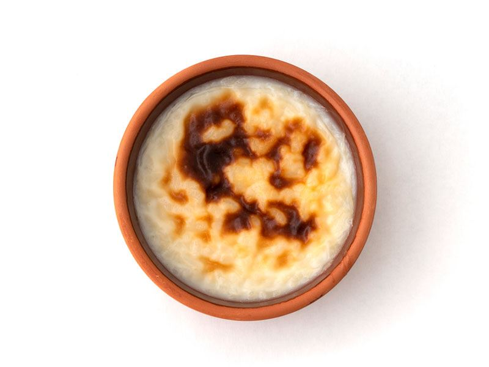

Fırın Sütlaç Tarifi İçin Malzemeler
- 1 litre süt
- 1/2 su bardağı pirinç
- 1 su bardağı toz şeker
- 1 paket vanilya
- 2 su bardağı su
- 3 yemek kaşığı nişasta
- 1/2 su bardağı süt
Fırın Sütlaç Tarifi Nasıl Yapılır?


- Fırın sütlaç yapımı için; orta boy derin bir tencere içine yarım su bardağı yıkanmış pirinci koyun.
- Üzerine 2 su bardağı su döküp, kaynamaya bırakın.
- Kaynadıktan sonra orta kısık ateş üzerinde ara ara karıştırarak pirinçler suyunu çekip, iyice yumuşayana kadar pişirin.
- Daha sonra iyice yumuşayan pirinçlerin üzerine 1 litre süt ve 1 paket vanilya koyup, karıştırın.
- Ardından sütlacı kaynamaya bırakın. Kaynadıktan sonra 5 dakika kadar ara ara karıştırarak, kaynatmaya devam edin.
- Diğer tarafta bir kase içine 3 yemek kaşığı kadar nişasta koyun. Yemek kaşıkları çok dolu dolu olmasın. Nişastanın üzerine yarım su bardağı süt dökün. Nişasta iyice çözülene kadar karıştırınn.
- Daha sonra kaynayan sütün içine 1 su bardağı toz şeker ekleyin.
- Ardından da hazırladığınız nişastalı karışımı döküp, güzelce karıştırın.
- Sütlacı yaklaşık 10 dakika hafifçe koyulaşana kadar sürekli karıştırarak, kaynatın. Hemen ardından ocak üzerinden alın.
Fırınlama İşlemi İçin Aşamalar

Hazırladığınız sütlacı ısıya dayanaklı fırın kaplarına ya da küçük güveç kaplarına üzerlerinde biraz boşluk kalacak şekilde eşit olarak paylaştırın. Sütlaçları fırın tepsisi içine yerleştirin. Fırın kaplarının yarısına gelecek şekilde tepsinin içine su dökün. Sütlaçların üzeri kabuk bağlayana kadar bekletin.
Daha sonra sütlaçları önceden ısıtılmış 190 derece fırının üst rafına koyun. Fırının ızgara bölümünde üzerleri kızarana kadar kontrollü bir şekilde pişirin. Fırın sütlaçlar piştikten sonra tepsi içinden hemen alıp, tezgah üzerine koyun. İyice soğuyana kadar bekletin. Daha sonra da buzdolabında 2 saat kadar dinlenmeye bırakın.
Hazırladığınız fırın sütlaçların üzerini dövülmüş fındık, fıstık ya da ceviz ile süsleyerek servis edebilirsiniz. Afiyet olsun.
Fırın Sütlaç Kaç Dakikada Hazırlanır? Kişiliktir?
Bu tarifi hazırlamak için toplamda 55 dakika gerekmektedir. Bu sürenin 10 dakikası hazırlık, 45 dakikası da pişirme süresidir. Tarifte vermiş olduğumuz malzemeler 6 kişilik fırın sütlaç içindir.